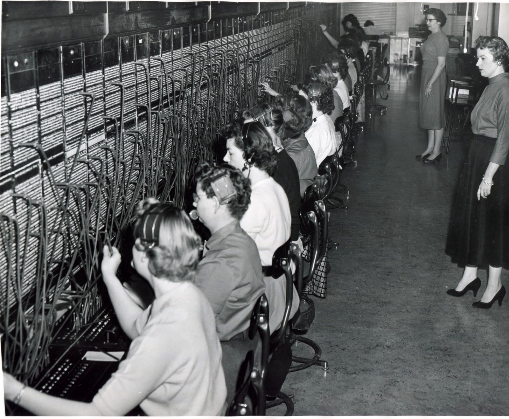

Wordpress
Scalability with Docker
Created by Gianluca Arbezzano

|
Gianluca Arbezzano Full Stack Developer Maintainer Doctrine Module and open source contributor |
Keywords
Isolation
To increase control of system
Isolation
To mitigate the security issue
Isolation
To gurantee scalability
Scalability
What is scalabily?
Scalability <=> High avalability.
Scalability is the ability of a system, network, or process to handle a growing amount of work in a capable manner or its ability to be enlarged to accommodate that growth. cit. Wikipedia.
There are two types of scalability
Vertical scalability

Horizontal scalability

Hourly metric

The traffic is a peaks's issue

Your server supports all traffic ALWAYS

The differce between this peaks for a lot of time is unused

you pay it!
Our infrastructure
There are other problems

Disaster recovery
Your switchboard scale?
There are other problems
- Isolation
- Scalability
- Monitoring
- freedom and security
we submerged by problems

and we hide a lot of them!
Choice your environment

I know what you think..
Each application require its server! cit. strong sysadmin
I am here to apply this concept at your experience
Why AWS?
Elastic Container Service

Elastic Container Service
Linux Container LXC
it is an operating-system-level virtualization environment for running multiple isolated Linux systems (containers) on a single Linux control host.
Linux Container LXC
it is an operating-system-level virtualization environment for running multiple isolated Linux systems (containers) on a single Linux control host.
I love Wikipedia
Docker
Docker containers wrap up a piece of software in a complete filesystem that contains everything it needs to run: code, runtime, system tools, system libraries – anything you can install on a server
Docker
Commands:
attach Attach to a running container
build Build an image from a Dockerfile
images List images
kill Kill a running container
logs Fetch the logs of a container
ps List containers
restart Restart a container
rm Remove one or more containers
rmi Remove one or more images
run Run a command in a new container
search Search the Docker Hub for images
start Start one or more stopped containers
stop Stop a running container
MySQL - dockerfile
FROM ubuntu
RUN dpkg-divert --local --rename --add /sbin/initctl
RUN ln -s /bin/true /sbin/initctl
RUN echo "deb http://archive.ubuntu.com/ubuntu precise main universe" > /etc/apt/sources.list
RUN apt-get update
RUN apt-get -y install mysql-server
EXPOSE 3306
CMD ["/usr/bin/mysqld_safe"]
Apache - dockerfile
FROM php:5.6-apache
RUN a2enmod rewrite
RUN apt-get update && apt-get install -y libpng12-dev libjpeg-dev
&& rm -rf /var/lib/apt/lists/* \
&& docker-php-ext-configure gd --with-png-dir=/usr --with-jpeg-dir=/usr \
&& docker-php-ext-install gd
RUN docker-php-ext-install mysqli
VOLUME /var/www/html
RUN curl -o wordpress.tar.gz -SL https://wordpress.org/wordpress.tar.gz \
&& tar -xzf wordpress.tar.gz -C /usr/src/ \
&& rm wordpress.tar.gz \
&& chown -R www-data:www-data /usr/src/wordpress
CMD ["apache2-foreground"]
Create mysql container
docker build -t gianarb/mysql .
Same stuff for wordpress
Run all
docker run -t db -p 3306:3306 gianarb/mysql
docker run -p 8080:80 -d --name wp1 --link mysql:mysql wordpress
docker compose
Compose is a tool for defining and running multi-container Docker applications. With Compose, you use a Compose file to configure your application’s services.
docker compose
wp:
image: wordpress
ports:
- 8081:80
environment:
WORDPRESS_DB_HOST: mysql
WORDPRESS_DB_USER: root
WORDPRESS_DB_PASSWORD: help_me
links:
- mysql:mysql
mysql:
image: mysql:5.7
environment:
MYSQL_ROOT_PASSWORD: help_me
docker compose
Commands:
build Build or rebuild services
logs View output from containers
ps List containers
pull Pulls service images
restart Restart services
rm Remove stopped containers
run Run a one-off command
scale Set number of containers for a service
start Start services
stop Stop services
up Create and start containers
Elastic Container Service
it is a highly scalable, fast, container management service that makes it easy to run, stop, and manage Docker containers on a cluster of Amazon EC2 instances
by AWS
Elastic Container Service
Container instance: An Amazon EC2 that is running the Amazon ECS Agent. It has been registered to ECS Cluster
Elastic Container Service
Cluster: It is a pool of Container instances
Elastic Container Service
Task definition: A description of an application that contains one or more container definitions
{
"family": "",
"containerDefinitions": [
}
}
Each Task definition running is a Task
ECS in practice
ecs-cli configure \
--region eu-west-1 \
--cluster wps \
--access-key apikey \
--secret-key secreyKey
Create your cluster and confiugre your cli
ECS in practice
ecs-cli up --keypair codemotion-ecs \
--capability-iam \
--size 1 \
--instance-type t2.medium
Configure Cluster and start first EC2
ECS in practice
ecs-cli compose --file docker-compose.yml \
--project-name wp1 up
Up your first wordpress task, wp1
ECS in practice
ecs-cli ps
See status of your tasks
ECS in practice
COMMANDS:
configure Configures your AWS credentials
up Create the ECS Cluster
down Delete the ECS Cluster and associated resources
scale Modify the number of container instances.
ps List all of the running containers.
compose Execute docker-compose style commands
on an ECS cluster.
help, h Shows a list of commands or help for one command
docker-compose style commands?!
Now we have 2 wordpress that run on different ports 8080 and 8081
Our problem are not finished
HAProxy helps you
high availability, load balancing, and proxying for TCP and HTTP-based applications. It is particularly suited for very high traffic web sites and powers quite a number of the world's most visited ones.
HAProxy helps you
...
frontend wp_mananger
bind :80
acl host_wp1 hdr(host) -i wp1.gianarb.it
acl host_wp2 hdr(host) -i wp2.gianarb.it
use_backend backend_wp1 if host_wp1
use_backend backend_wp2 if host_wp2
backend backend_wp1
server server1 54.229.190.73:8080 check
backend backend_wp2
server server2 54.229.190.73:8081 check
Maybe this is not the best solution
Nginx could be a Reverse Proxy

Consul
AWS! AWS! AWS!
You are only a fun boy!
Manage a cluster of Linux containers as a single system to accelerate Dev and simplify Ops.
Kubernetes is an open source orchestration system for Docker containers.

Docker Swarm is native clustering for Docker. It allows you create and access to a pool of Docker hosts using the full suite of Docker tools

Instead of installing packages via yum or apt, CoreOS uses Linux containers to manage your services at a higher level of abstraction
Try Elastic Container Service
Take your coupon
Where is your wordpress?!
I don't know
It'll not more a bad response